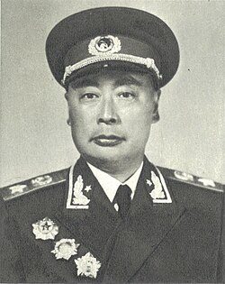

陈毅
陈毅（1901—1972），江苏乐至人，中华人民共和国开国元帅，著名的无产阶级革命家、军事家、外交家。他在革命战争年代指挥过多次重大战役，作战勇敢果断，战略眼光独到，是人民解放军的重要领导人之一。
新中国成立后，陈毅不仅在军事领域作出贡献，还长期担任外交部长。他以宽广胸怀、灵活智慧和坦荡正直的作风赢得了国际友人的尊重，被誉为“诗人元帅”，其诗词充满爱国主义与革命豪情。
在家庭生活中，陈毅注重对子女的严格教育。他常以身作则，强调诚实做人、勤俭节约、勇于担当。他教育孩子要独立奋斗，不依赖家庭背景，始终将国家与人民的利益放在首位。
陈毅的家风以爱国、清廉、正直为核心，不仅影响了家人，也激励了后世无数青年。他的精神与家风，已成为红色家风的重要典范，代代相传。
← 返回中国地图